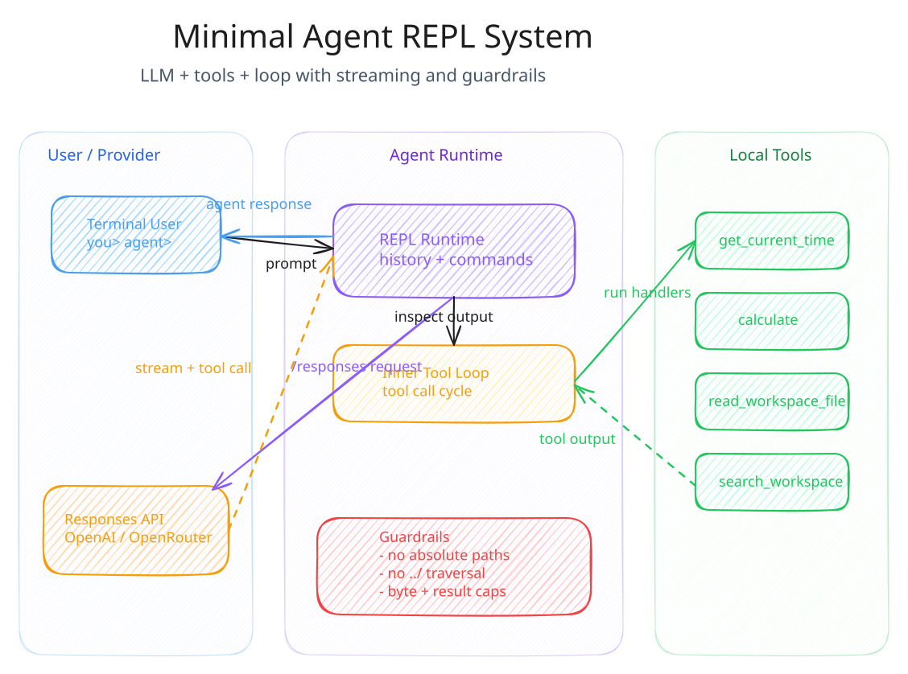
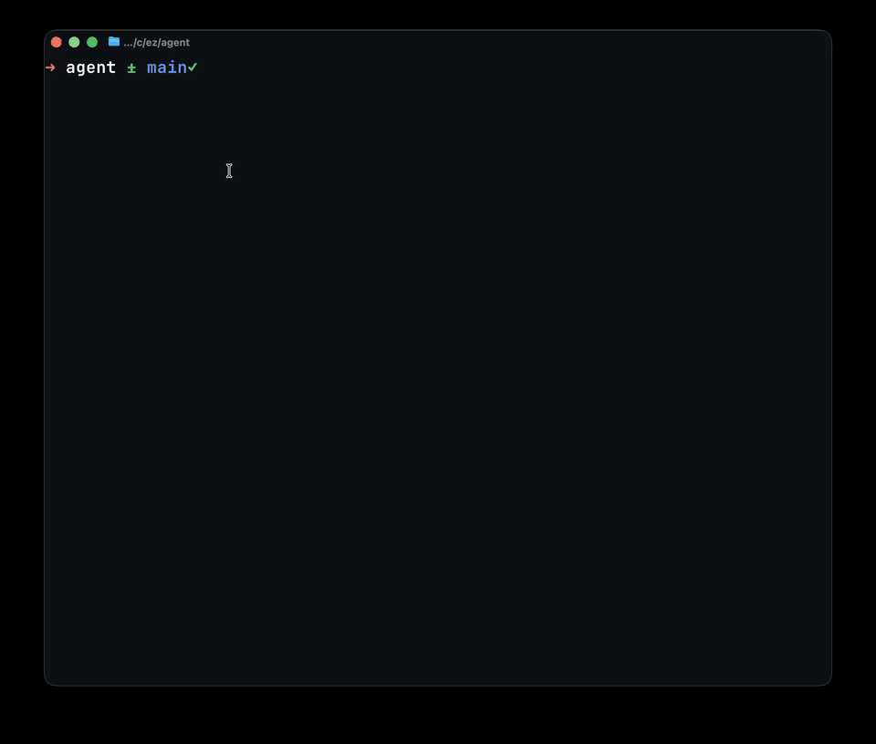
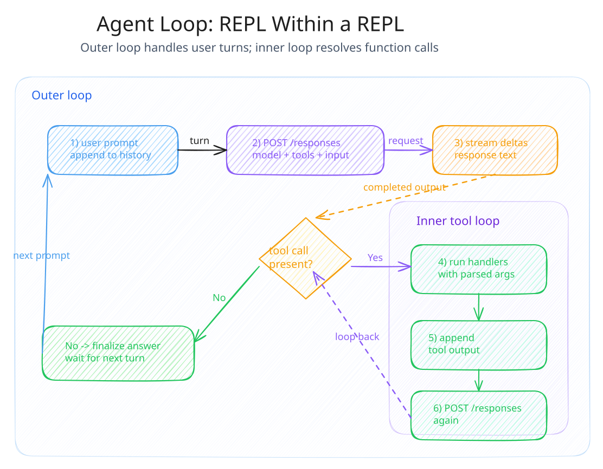
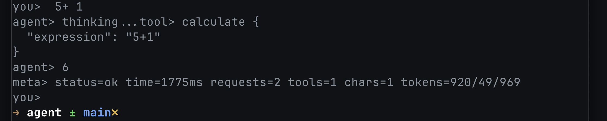

We Built a Minimal Agent REPL
16/02/2026
Agents as While Loops: using a tiny terminal REPL to build a simple tool-calling agent.

This is a small and simple learning exercise: make a miniature agent runtime that mimics the fundamentals of a real agent loop. No framework magic, no SDK, just one clear loop: user input, model output, tool calls, repeat. I was inspired by this tweet below:
System image
Live demo
Quick run from the real REPL.

Loop diagram

What we built:
1. Streaming assistant output in the terminal so we can see progress in real time.
2. A thinking indicator before first token so slow turns still feel responsive (super basic).
3. Session save/load so conversations can be resumed.
4. Safe workspace inspection tools for reading and searching local files.
5. Per-turn metrics plus Ctrl+C cancellation.
6. Phase-based reasoning controls for plan/build/review modes.
Safety guardrails
We intentionally kept tool access constrained.
- read_workspace_file blocks absolute paths and parent directory traversal.
- search_workspace skips .git and node_modules.
- Both tools cap bytes/results and skip binary content.
Provider flexibility
The same loop runs on OpenAI or OpenRouter. We can switch providers and models at runtime with /provider and /model, which made testing and comparison much easier.
The tiny tool-calling loop that matters
TS
let response = await responses.create({
input: history,
tools,
stream: true,
});
history.push(...response.output);
while (hasFunctionCalls(response.output)) {
for (const call of getFunctionCalls(response.output)) {
const result = await runTool(call.name, JSON.parse(call.arguments));
history.push({
type: "function_call_output",
call_id: call.call_id,
output: JSON.stringify(result),
});
}
response = await responses.create({
input: history,
tools,
stream: true,
});
history.push(...response.output);
}Metrics screenshot
Single-turn trace with both tool execution and per-turn metrics.

Conclusion
This was fun and educational: small, understandable, and practical enough to understand. Next step is looking at other more advanced agent runtime features and SDKs, but the core loop here of what I wanted to see is fundamentally complete. Thanks for reading!